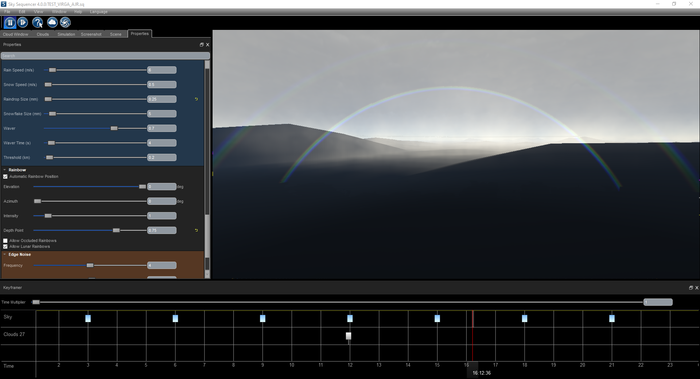

Rainbows Tutorial¶
Overview¶
Rainbows are automatically generated by trueSKY.
To manually adjust the position of the rainbow, uncheck ‘Automatic Rainbow Position’, and adjust the elevation and azimuth. This allows to create a physically impossible rainbow i.e. not centred about an antisolar or antilunar point.
To adjust the point at which the rainbow intersects the terrain, change the value of the depth point.
Near:

Far:

Lunar Rainbows are created in the same way with precipitation that is illuminated by unoccluded light from the moon. All parameter that affect normal solar rainbows apply to lunar ones as well.
The colour of the light dramatically affects the rainbow’s spectrum, for example at sunset.

Setting the Raindrop size to less than 1mm introduces a submillimetric light scattering approximation. At such small droplets sizes, conventional geometric optics doesn’t accurately predict the rainbow’s spectrum, these leeds onto certain features such as supernumerary rainbows. This is still an approximation and we are looking to calcuate more accurately the submillimetric light scattering in later revisions!
